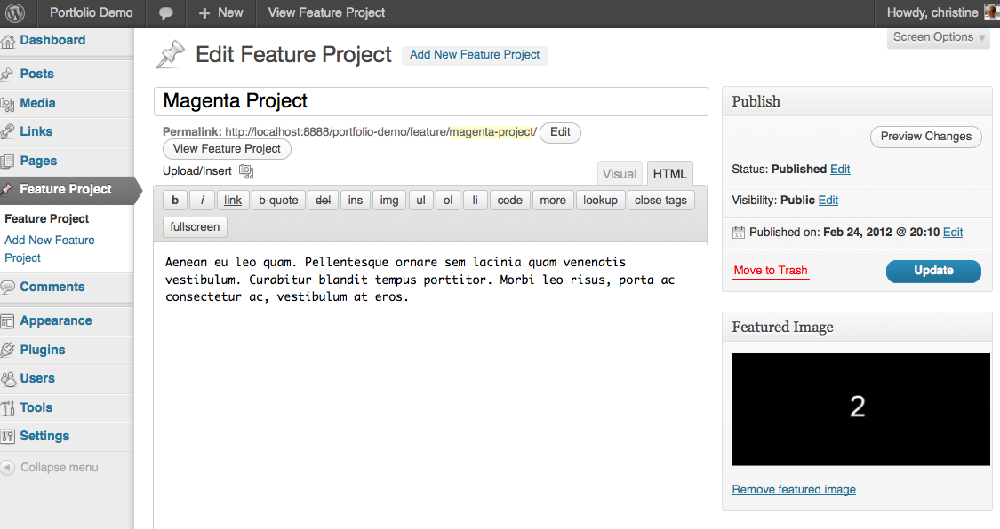

Bluelime Media
(Langara, BCIT, Vancouver, BC)
bluelimemedia.com
wpyogi.com
@bluelimemedia
Press → key to advance. Zoom in/out: Ctrl or Command + +/-.
Bluelime Media
(Langara, BCIT, Vancouver, BC)
bluelimemedia.com
wpyogi.com
@bluelimemedia
Use a plugin if:
Don't use a plugin if:
When building custom themes, it's best to start with a stripped down theme.
Sliders to consider:
JQuery and CSS in the header
<link rel="stylesheet" href="css/global.css">
<script src="https://ajax.googleapis.com/ajax/libs/jquery/1.5.1/
jquery.min.js"></script>
<script src="js/slides.min.jquery.js"></script>
<script>
$(function(){
$('#slideshow').slides({
preload: true,
preloadImage: 'images/loading.gif',
effect: 'fade',
play:3000,
crossfade: true,
fadeSpeed: 500,
});
});
</script>
HTML in the body
<div id="slideshow"> <div class="slides_container"> <img src="images/1.jpg" width="640" height="400" alt="1"> <img src="images/2.jpg" width="640" height="400" alt="2"> <img src="images/3.jpg" width="640" height="400" alt="3"> </div> </div>
The safe and recommended method of adding JavaScript to a WordPress generated page is by using wp_enqueue_script();
wp_enqueue_script( $handle, $src, $deps, $ver, $in_footer );
function blm_init_method() {
wp_enqueue_script('jquery');
wp_enqueue_script( 'slides', get_template_directory_uri().'/
js/slides.min.jquery.js', array( 'jquery' ) );
}
add_action('wp_enqueue_scripts', 'blm_init_method');
Your header file needs to be updated with the jQuery event function required for your slider.
<script>
jQuery(document).ready(function( $ ) {
$('#slideshow').slides({
preload: true,
preloadImage: <?php echo get_template_directory_uri(); ?>/'images/loading.gif',
effect: 'fade',
play:3000,
crossfade: true,
fadeSpeed: 500,
});
</script>
Note the use of jQuery(document).ready(function( $ )
instead of
$(document).ready(function()
Update your CSS.
Nothing too fancy here.
<?php if (have_posts()) : while (have_posts()) : the_post();
$args = array(
'post_type' => 'attachment',
'numberposts' => -1,
'orderby'=> 'menu_order',
'order' => 'ASC',
'post_mime_type' => 'image',
'post_parent' => $post->ID
);
$attachments = get_posts( $args );
if ( $attachments ) {
foreach ( $attachments as $attachment ) {
echo wp_get_attachment_image( $attachment->ID, 'full' );
}
} ?>
<?php if (have_posts()) : while (have_posts()) : the_post();
$args = array(
'post_type' => 'attachment',
'numberposts' => -1,
'orderby'=> 'menu_order',
'order' => 'ASC',
'post_mime_type' => 'image',
'post_parent' => $post->ID
); ?>
<article id="post-<?php the_ID(); ?>" <?php post_class(); ?>>
<h1><?php the_title(); ?></h1>
<?php the_content(); ?>
</article>
<aside>
<div id="slideshow">
<div class="slides_container">
<?php
$attachments = get_posts( $args );
if ( $attachments ) {
foreach ( $attachments as $attachment ) {
echo wp_get_attachment_image($attachment->ID , 'full' );
}
}?>
</div>
</div>
</aside>
<?php endwhile; endif; ?>
Custom Post Types can be used to set up specific content types to create a slider.
<section id="featured-slider">
<div id="slides">
<div>
<?php
$loop = new WP_Query (
array (
'post_type' => 'feature',
'posts_per_page' => -1,
'orderby'=> 'ASC'
)
);
while ( $loop->have_posts() ) : $loop->the_post(); ?>
...
<div>
<?php $url = get_post_meta($post->ID, "url", true);
if($url!='') {
echo '<a href="'.$url.'">';
echo the_post_thumbnail('full');
echo '</a>';
} else {
echo the_post_thumbnail('full');
} ?>
<div>
<h5><?php the_title(); ?></h5>
<?php the_content(); ?>
</div>
</div>
<?php endwhile; ?>
<?php wp_reset_query(); ?>
</div>
<a href="#">prev</a>
<a href="#">next</a>
</div>
</section>
A demo website can be viewed at portfolio-demo.bluelimemedia.com
The files for this demo and tutorials are provided in two parts.